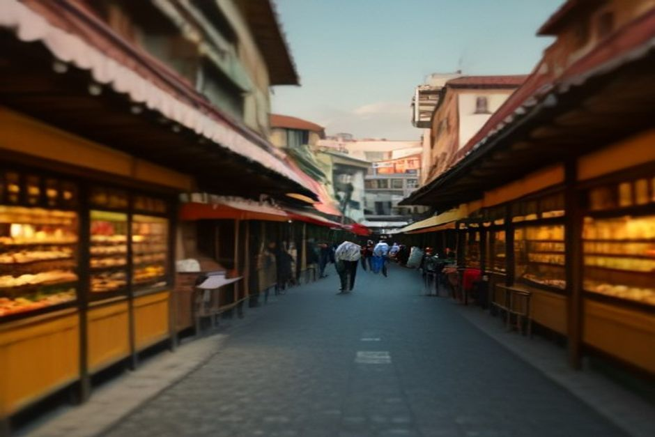
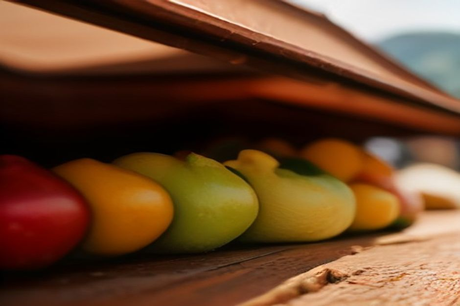

Tous les guides vous conseillent de visiter le marché de Funchal. Peu vous disent par quel étage commencer, quels étals éviter, ou que le bâtiment tout entier est un exemple d'architecture civique des années 1940 qui mérite le coup d'œil, même sans rien acheter. Voici ce qu'est vraiment le Mercado dos Lavradores, et comment le visiter comme il faut.
Qu'est-ce que le Mercado dos Lavradores, et pourquoi est-ce le marché le plus célèbre de Funchal ?
C'est le marché couvert permanent de Funchal pour les fruits, les fleurs, les légumes et le poisson, construit en 1940 pour offrir aux agriculteurs et pêcheurs de la ville une véritable halle commerciale plutôt que des étals en plein air. Ce bâtiment Art déco a été conçu par l'architecte Edmundo Tavares, et sa façade, son entrée principale et sa halle aux poissons sont ornées de panneaux d'azulejos de João Rodrigues représentant la vie du marché et des scènes régionales — une raison suffisante d'y entrer, même sans intention d'achat. Son nom se traduit simplement par « marché des travailleurs agricoles », et plus de quatre-vingts ans plus tard, c'est toujours un marché vivant, pas une pièce de musée, à quelques minutes à pied de la vieille ville de Zona Velha.

Que trouve-t-on réellement à l'intérieur ?
Le rez-de-chaussée et la cour centrale sont consacrés aux fruits, aux légumes et aux fleurs, avec des étals croulant sous des produits que la plupart des visiteurs n'ont jamais vus — corossol (anona), tamarillo, fruit de la passion, papaye et la petite banane sucrée typique de Madère, aux côtés de mangues et d'avocats plus familiers. Des producteurs de toute l'île y apportent leur récolte chaque jour, si bien que l'assortiment varie un peu selon la saison, mais c'est justement cette densité de couleurs et d'odeurs qui fait tout l'intérêt : voilà ce que produit réellement une île atlantique subtropicale, étalé sur un seul niveau.
Qui sont les bouquetières, et pourquoi portent-elles le costume régional ?
Ce sont des fleuristes qui perpétuent l'une des plus anciennes traditions du marché — des femmes vendant des bouquets de strelitzias, d'orchidées et de protéas, vêtues de la « saia à Madeirense », le costume traditionnel brodé et haut en couleur de l'île, avec sa jupe rayée rouge et jaune et sa coiffe pointue. C'est l'un des coins les plus photographiés du marché, et si quelques étals jouent aujourd'hui un peu la carte de l'objectif, le commerce de fleurs lui-même est bien réel et ancien — l'industrie d'exportation florale de Madère est centrée sur ce bâtiment depuis des générations.
Que trouve-t-on en bas, dans la halle aux poissons ?
Un tout autre univers. Le niveau inférieur, entièrement carrelé d'azulejos bleus et blancs du sol au plafond, est la halle aux poissons de Funchal — l'endroit où voir des thons entiers et la pêche emblématique des grands fonds de Madère, l'espada (sabre noir), remonté par les bateaux locaux depuis des profondeurs pouvant atteindre 800 mètres et disposé sur des étals de marbre chaque matin. C'est plus bruyant, plus froid et moins pensé pour les touristes qu'à l'étage, mais cela vaut le détour même si vous ne cuisinez pas ce soir — c'est l'image la plus juste de l'île de ce que l'Atlantique offre réellement ici.
Quand faut-il visiter le marché — et quand l'éviter ?
Le vendredi ou le samedi en début de matinée, idéalement avant 10h, c'est le moment idéal, quand les étals des producteurs locaux sont les plus frais et que la halle aux poissons bat son plein. Le marché est ouvert du lundi au vendredi d'environ 7h à 19h et le samedi de 7h à 14h, fermé entièrement le dimanche et les jours fériés. Les jours d'escale de croisière, le rez-de-chaussée se remplit vite en milieu de matinée, donc une visite matinale — ou en fin d'après-midi en semaine — vous offre une version bien plus tranquille du même marché.
Les prix sont-ils vraiment plus élevés pour les touristes ?
Dans certains étals, oui. Les présentoirs de fruits fixes les plus proches de l'entrée principale sont réputés pour pratiquer des prix nettement plus élevés que les étals situés plus à l'intérieur ou sur la galerie supérieure, davantage fréquentés par les habitants faisant leurs courses de la semaine. Demandez le prix avant d'acheter quoi que ce soit, et n'hésitez pas à dépasser la première rangée pour comparer — c'est une pratique courante, pas un manque de politesse. Beaucoup de vendeurs proposent aussi des dégustations gratuites de fruits exotiques pour attirer le client ; ils sont souvent intensément sucrés, et c'est précisément le but, alors goûtez avant de vous engager pour un sac entier.
Comment intégrer le marché à une journée plus large d'exploration du littoral de Madère ?
Le thon et l'espada posés sur ces étals de marbre sont débarqués par de petits bateaux qui travaillent les mêmes eaux qu'une excursion en bateau privé avec Chifbay longe en passant devant Câmara de Lobos — le marché est l'endroit où cette pêche arrive quelques heures plus tard. Associer une matinée au marché à un après-midi en mer, c'est découvrir les deux bouts de la chaîne alimentaire de Madère en une seule journée : où le poisson est vendu, et où il est réellement pêché.
Faites l'impasse dessus et votre séjour à Madère restera réussi. Mais visitez-le comme il faut — les deux étages, un départ matinal, quelques questions honnêtes sur les prix — et vous comprendrez mieux la façon dont l'île se nourrit qu'à peu près partout ailleurs où vous pourriez passer une heure à Funchal.
Questions fréquentes
À quelle heure ouvre le Mercado dos Lavradores ?
Du lundi au vendredi, environ 7h–19h, le samedi 7h–14h — fermé le dimanche et les jours fériés.
Est-il ouvert le dimanche ?
Non, le marché est fermé tous les dimanches et les jours fériés.
Quel est le meilleur moment pour visiter ?
Le vendredi ou le samedi matin avant 10h, avant les heures de pointe de la halle aux poissons et l'afflux des croisiéristes.

Les vendeurs surfacturent-ils les touristes ?
Certains étals fixes près de l'entrée, oui — demandez les prix d'abord et comparez avec les étals plus à l'intérieur ou à l'étage.
Quels aliments peut-on y goûter ?
Des dégustations gratuites de fruits exotiques à l'étage, ainsi que du thon frais et de l'espada dans la halle aux poissons carrelée en bas.